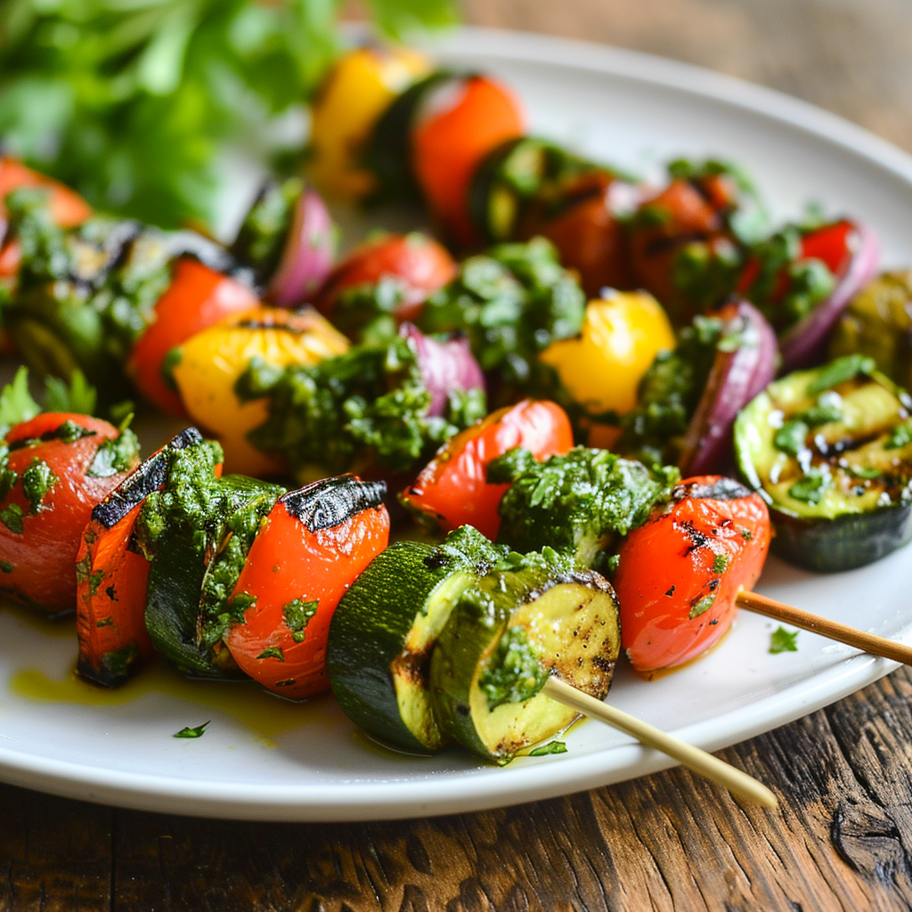

RECIPE
GRILLED VEGGIES WITH SAUCE
25 MINS • MEDIUM PREP • 6 SERVES

INSTRUCTIONS
PREPARE THE VEGETABLES
- Wash and dry all vegetables.
- Cut the bell peppers, zucchini, eggplant, onion, and mushrooms as directed. Leave cherry tomatoes whole.
SEASON THE VEGETABLES
- Place the prepared vegetables in a large mixing bowl.
- Drizzle with olive oil and sprinkle with salt, pepper, and oregano. Toss until evenly coated.
PREHEAT THE GRILL
- Preheat an outdoor grill or grill pan over medium-high heat. Lightly grease the grill grates with a small amount of oil to prevent sticking.
GRILL THE VEGETABLES
- Arrange the vegetables on the grill in a single layer.
- Cook for 4-6 minutes per side, turning occasionally, until they are tender and have visible grill marks.
- Remove from the grill and place on a serving platter.
PREPARE THE SAUCE
- In a small bowl, whisk together tahini, lemon juice, water, olive oil, garlic, cumin, paprika, and salt. Adjust the consistency with more water if needed. It should be smooth and pourable.
ASSEMBLE AND SERVE
- Drizzle the sauce over the grilled vegetables.
- Garnish with fresh parsley and sesame seeds if desired.
- Serve warm or at room temperature.
INGREDIENTS
- 1 red bell pepper, cut into large strips
- 1 yellow bell pepper, cut into large strips
- 1 medium zucchini, sliced into thick rounds
- 1 medium eggplant, sliced into thick rounds
- 1 large red onion, cut into wedges
- 1 cup cherry tomatoes (kept whole)
- 1 cup button or portobello mushrooms, halved if large
- 2 tbsp olive oil
- 1 tsp sea salt
- 1/2 tsp black pepper
- 1 tsp dried oregano or Italian seasoning
- 1/4 cup tahini (sesame seed paste)
- 2 tbsp lemon juice
- 2 tbsp water (more if needed to thin)
- 1 tbsp olive oil
- 1 garlic clove, minced
- 1/2 tsp cumin powder
- 1/4 tsp paprika
- Salt to taste
EQUPIMENT NEEDED FOR PREPERATION
- Cutting board and sharp knife
- Large mixing bowl
- Grill or grill pan
- Tongs or a spatula
- Small bowl for the sauce
- Whisk or fork
- Serving platter
NUTRITIONAL VALUE
Calories: 200
Protein: 4g
Total Fat: 17g
Carbohydrates: 27g
Cholesterol: 0mg
Sodium: 350mg
Note: Nutritional values are approximate and may vary based on specific ingredients and portion sizes.
Leave a Comment